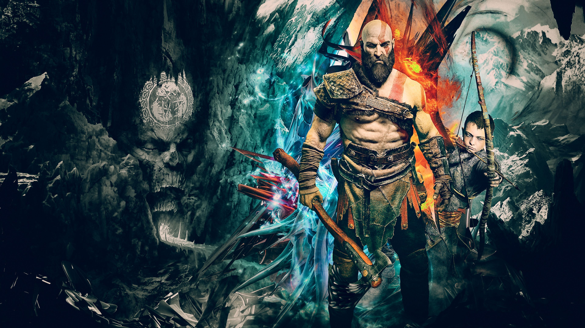

| Home | Login | Criar conta | |
|  | |
|
It is 2022 and here we go again. A new African and Arab Collegiate Programming Championship season is kicking off and a lot of surprises await everyone. Amira, the ACPC Business Development Consultant, is checking with ACPC partners and friends how they feel about the new season and the Kick Off contest by the following question: "On a scale from 1 to 10 how excited are you about the new season?". Amira knows her friends very well and one of them is Obioma. Amira knows that if Obioma answered with any number larger than 5 then she is excited and with any number other than that then she isn’t excieted. Given the number that Obioma answered the question with, can you tell us if she is excited or not? |
|
Todos os direitos reservados |
|